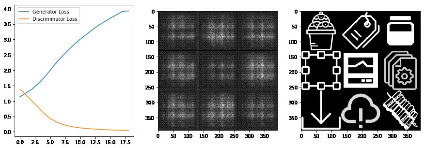
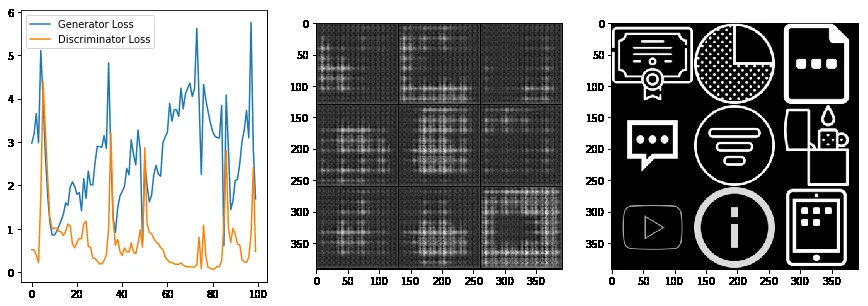
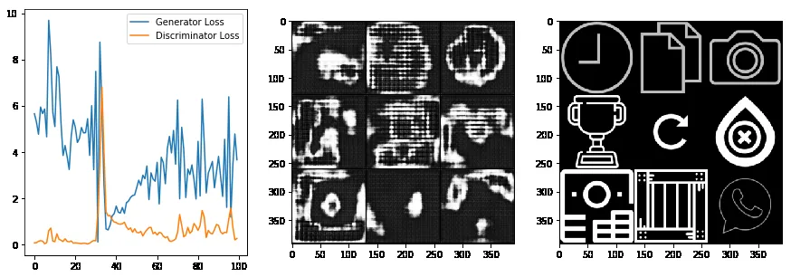
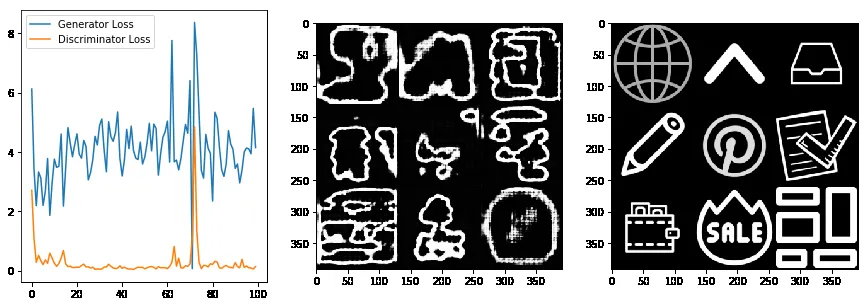
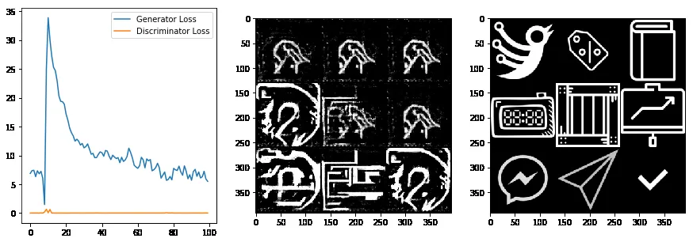

Generative Adversarial Networks (aka. GANs) are one of the most important type of neural networks. As they provide a direct way to create something new out of the thin air. There is a lot of literature out there which explains GANs from their working in theory to their practical implications.
In this article, I will share my experience of applying GAN to a specific problem. The problem statement is "Given large enough Icons dataset, can a GAN learn its distribution?" GANs are well know to learn the underlying distribution of data. This helps not only to fit the entire dataset in a single neural network but also related data points not present in the dataset.
The "This Does Not Exist" Trend
this*doesnotexist.com is a general trend many people use to display output of GAN for their application. e.g. thispersondoesnotexist.com is website which shows new face generated by a GAN. Hence the title of this article.
The Experiment Setup
Step 1: Baseline Implementation
I started off this experiment by implementing vanilla DC GAN and then fitting it to MNIST which worked as expected.
Step 2: Data Collection
Next step was to scrape data around the internet. I wrote some scraping scripts, I was able to scrape around ~1000 different icons of size 512x512.
Step 3: Data Cleaning
Even though this data is pretty small compared to 60,000 MNIST samples, it should still give a baseline result. The data I collected was not clean, so I wrote some cleaning scripts and converted icons to mimic MNIST like style.
Sample Icons from the dataset
Training Infrastructure
Google Colab Setup
I used Google Colab for training my network. They (sometime) offer Tesla T4 for free for at max 24 hours (can be interrupted in between). Tesla T4 has comparable performance with RTX 2070. You can use Google Drive to provide storage for Colab. So if you modify your code so that interruptions, jupyter notebook and Google Drive does not affect you, you get a free high performance GPU for training.
Training Progress Visualization
Following are snapshots from training (losses in left, output in the middle and ground truth in right):
Epoch ~ 1: Initial Patterns
It started off as expected, trying to pick up some patterns:
Epoch ~ 10: Basic Shapes
After 10 epochs, it is trying to produce basic patterns:
Epoch ~ 40: Recognizable Forms
After around 50 epochs, it is producing blurry and broken shapes but good progress so far :D
Epoch ~ 70: Hand-drawn Quality
But around 70 epochs, shapes look like hand drawn icons:
Epoch ~ 700: Mode Collapse
However, after 500 epochs, generator loss became very high but discriminator loss got almost zero which means discriminator got too good and generator lost this game.
Challenges & Insights
Mode Collapse
The classic GAN problem where the discriminator becomes too good, causing the generator to fail in learning diverse patterns.
Limited Dataset
With only ~1000 icons compared to MNIST's 60,000 samples, the model had limited examples to learn from.
Training Time
Balancing training time with Google Colab's 24-hour limit and potential interruptions.
Hyperparameter Tuning
Finding the right balance between generator and discriminator learning rates to avoid mode collapse.
Future Directions
Text-to-Icon Generation
Using word embeddings to describe icon as set of keywords and then use those embeddings to create icon on the fly.
Larger Dataset
Collecting more diverse icon samples to improve the model's ability to learn icon distributions.
Advanced Architectures
Exploring more modern GAN architectures like StyleGAN or Progressive GAN for better results.
Conclusion
Thanks for reading this article. This project is work in progress and I will share the update once I have some promising results. In the meantime you can checkout the repository I created for this project. If you have any questions, let me know in the comments.
This post is application supplement in machine learning for toptal application.
Responses (1)